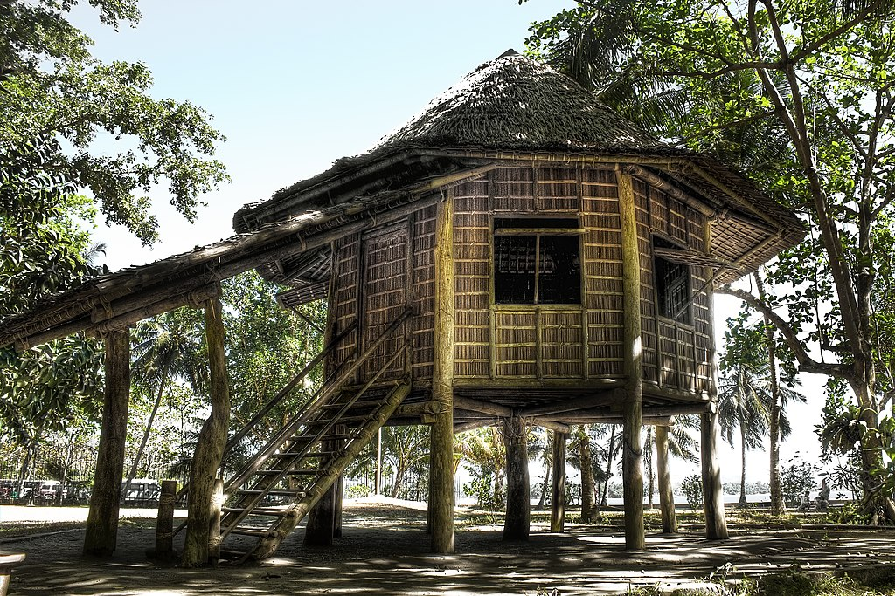

Aliguay is an island in the Philippines, and a barangay of Dapitan. The island is an established marine sanctuary. The island is surrounded by white sand beaches and coral reefs. There are no water sources on the island. A few residents live on Aliguay Island, mostly selling fish to tourists.
Casa Bernedo, also known as the Bernedo Ancestral House, is a two-storey ancestral house in Dipolog, Zamboanga del Norte in the Philippines.
The house was the residence of the then-influential Bernedo family of Dipolog. It was built by the turn of the 20th century by a Spaniard named Justo Bernedo and his wife Isabel Macias, a Filipina from Dipolog, where they raised their nine children together. The Bernedo house largely retained its original structure, only undergoing a minor renovation shortly after the end of World War II. Known to be an influential and a religious family in Dipolog's earliest days, the Bernedos hosted numerous dignitaries and VIPs who visited Dipolog in the house, including the town's Catholic church clergy and Philippine President Ramon Magsaysay.
Following the death of the last of the nine surviving Bernedo-Macias siblings in 2008, the Bernedo house was closed permanently. On July 1, 2012, the Bernedo house, now named Casa Bernedo, was reopened to the public as the Dipolog City Center for the Culture and the Arts in time for the city's centenary to be observed exactly a year later.
Today, Casa Bernedo serves as a museum and art gallery. The lower floor, which was said to be a small storage house or warehouse (commonly known as a bodega), serves as a venue for visual art and photography exhibits. Another room on the lower floor was used as a local gun store, until that space is currently occupied as the city's tourism office by the City Government of Dipolog.
The second floor, where the Bernedo-Macias family once lived, serves as a museum preserving the family house's interior and arrangements. The floors and their home appliances were all made out of Philippine hardwood, and their kitchen appliances were all imported from the United States. It was said that the kitchen, also on the upper floor, had a story on Dipolog becoming the Spanish sardine capital today when Isabel Macias Bernedo would make Spanish-styled sardines which she learned from her sister Concepcion Macias Montaño every summer. Casa Bernedo is open to the public free of charge.
Dipolog Sunset Boulevard, or Foreshore Development and Wellness Center, is an esplanade in Dipolog, Zamboanga del Norte along a 7.6 kilometers stretch of foreshore spanning from Sta. Cruz of Barangay Central to Purok Bularan of Barangay Miputak. It is equipped with basketball courts and playground part. It is also the site of the annual "P'gsalabuk Festival" and other similar events, motor company trade shows, and sporting events like marathons and triathlons. There are two commercial buildings augmenting the presently existing restaurants, bars, and several food and beverage peddlers.
Extension is currently underway to extend the boulevard for another kilometer reaching the seaport of Galas making it a total of 2.6 kilometers. Long term plans for the boulevard is extending it in both ways of the city to southern part of Olingan and northern part of Barra creating a new river park esplanade. Also included for foreshore development are areas of Minaog and Sicayab that goes beyond the Dipolog Airport. All of the said plans are drafted in the city's blueprint program named SWIGAPORE 2030 that aims in making Dipolog a self-reliant, super city by 2030 in terms of infrastructure, housing. social and health services.
The farm of José Rizal (Filipino: Sakahan ni Jose Rizal) is a designated historic site in Katipunan, Zamboanga del Norte, Philippines.
When Dr. Jose Rizal reported to Dapitan in Mindanao from 1892 to 1896 by the Spanish government, aside from spending some time in teaching the town folks, he also engaged in medical practice through which he was able to cure the eye ailment of Calixto Carreon. The story said that Calixto offered Dr. Rizal the 40-hectare land as a way to repay him. Dr. Rizal accepted Calixto's offer, but insisted on a payment of ₱200, which he had won in a lottery organized by the Spanish. Rizal planted coconuts, hemp, sugar cane, and fruit trees on his farm.
In order to keep the farm under proper management, Dr. Rizal designated one of his sisters, Trinidad, to look after the farm. After several years, Trinidad passed the farm's management to Fernando Eguía, one of Dr. Rizal's students. A marker was installed in the area by the National Historical Institute (NHI) which states that Trinidad sold the land to Crisostomo Eguía Sr., son of Fernando. It was agreed right there and then after the sale that the land would still be registered under the name of Dr. Rizal. Other siblings of Dr. Rizal also witnessed such agreement.
At present days, the farm is under the care of the children of Crisostomo Eguia Sr. On a positive note, Director Mary June Bugante of the Department of Tourism Region 9 said her office is constantly in touch with Eguia Family to encourage them to transform the farm into a duly recognized tourist destination.
Rizal Shrine
The protected landscape area contains the Rizal National Shrine, declared in 1973 through Presidential Decree No. 105. It is a collection of five reconstructed houses of bamboo and nipa originally built by José Rizal,[1] as well as other auxiliary structures
Casa Residencia
The main house and also the biggest. It served as Rizal's residence where his mother and sisters also stayed during their visit. It has one bedroom and a surrounding veranda with views of the Dapitan Bay.
Casa Redonda
The Round House. An octagonal stilt house that served as the quarters of Rizal's students and a clinic.
Casa Cuadrada
The Square House. Located at the base of a hill, it served as a workshop and secondary dormitory for Rizal's students.
Casitas de Salud
The Health Houses. Two small huts perched atop a low hill, one for males and the other for females, which provided lodgings for Rizal's out-of-town patients.
Cosina
An outdoor kitchen with thatched roofing and open walls for ventilation, it features a traditional banggerahan (scullery) and kalan (firewood-fueled clay stove).
Casa Redonda Pequena
A hexagonal shed which was used as a henhouse. Other structures found in the park include a dam constructed by Rizal, an aqueduct, a water reservoir, an amphitheater and a museum. The Rizaliana Museum built in 1971 contains the hero's memorabilia including the blackboard and table he used for teaching. It is located near the park's entrance which also houses the office of the shrine curator. A large rock in the middle of the park known as Mi Retiro Rock marks the spot where Rizal wrote his poems Mi Retiro (My Retreat) and Himno a Talisay (Hymn to Talisay) about his life in exile in Dapitan.